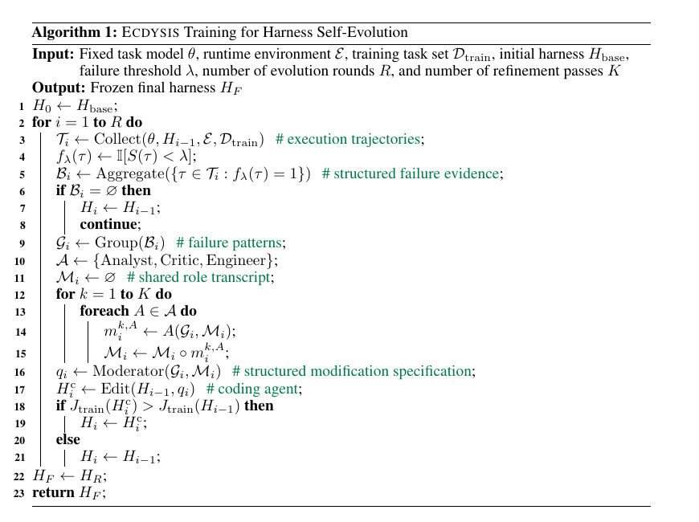

Ecdysis: Efficient Training of Runtime Harnesses via Cross-Task Failure Diagnosis
Paper: arXiv 2609.11677, "Ecdysis: Efficient and Effective Training of Runtime Harnesses for LLM Agents", by Ruiqing Yue, Yu Cui, Zhuoyu Sun, et al. (14 authors). Grounded in the arXiv HTML full text; the algorithm figure is rendered from the paper's PDF (the paper contains no figures, only tables and Algorithm 1).
TL;DR
- Ecdysis reframes harness self-evolution around a failure-attribution question the rest of the genre skips: is a given failure a model-specific deficiency (patching it overfits the harness to this model) or a systematic harness deficiency (patching it generalizes)? Its answer: only failure patterns that recur across distinct tasks are strong evidence for harness-level repair.
- Mechanically, it replaces per-failure serial patching with batch-level failure aggregation (one coding-agent call per evolution round instead of one per failure) plus Failure-Driven Collaborative Refinement (FDCR): Analyst/Critic/Engineer roles debate the aggregated evidence over a shared transcript, and a Moderator emits a structured modification spec that a coding agent then implements.
- Results across five LLMs and τ²-Bench Airline/Retail: highest average accuracy (59.33%), a 27.1% relative gain over serial self-evolution and 14.8% over a human-optimized harness, up to 1.84× faster harness training (3.23× without FDCR), and a 14.5-percentage-point reduction in model-accommodating (overfitting) modifications. Comparable performance is reached with one-quarter of the training data.
Why this matters
Harness evolution is having its moment — Meta-Harness, DarwinX, recursive harness self-improvement — and almost all of it shares one inner loop: observe a failure, prompt a coding agent to patch the harness, keep the patch if a score goes up. Ecdysis attacks the two costs of that loop that everyone experiences but few model explicitly. First, search is slow: every candidate needs repeated agent executions and code edits, and per-failure patching multiplies coding-agent calls. Second, fixes overfit: the paper's preliminary study is a genuinely useful negative result — across six Qwen3 model-domain combinations, no harness gets 29.72%, a fixed human-configured harness gets 50.28%, and serially patching the harness after each failure gets only 43.33% — naive self-evolution is worse than doing nothing to a good hand-built harness. The mechanism the paper identifies is precise: local failure-driven evolution promotes a particular training-task answer into a general runtime constraint, or deletes a legitimate action option to route around one model's mistake, shrinking the valid action space and hurting cross-model transfer.
For anyone building self-improving harnesses, this is the same lesson the fragility literature keeps circling — the improvement signal is confounded — but with a concrete, cheap fix: aggregate before you attribute.
The core idea
Decompose the aggregate harness update in an evolution round into two components:
where \(\Delta H_{\mathrm{model}}\) is the part of the update that accommodates limitations of the current task model, \(\Delta H_{\mathrm{harness}}\) is the part that repairs systematic harness deficiencies, and \(t\) is the fraction of modification decisions that are model-specific accommodation. High-\(t\) updates resolve observed failures efficiently but overfit to the current model and training tasks. A single failure gives you almost no evidence about which component you're touching. A failure pattern that recurs across distinct task instances is much stronger evidence of a systematic harness deficiency — the paper is careful to call this an inductive bias, not causal attribution.
So Ecdysis does three things per round: aggregate all failures in the round into structured evidence, group them into cross-task patterns, and only then spend one coding-agent call implementing a spec that prioritizes the recurring patterns.

Algorithm 1 (rendered from the paper's PDF): per round — collect trajectories, aggregate failures, group into patterns, run K passes of Analyst/Critic/Engineer over a shared transcript, Moderator emits the modification spec, coding agent edits the harness, accept only on training-score improvement.How it works
Setup. A fixed task model \(\theta\), a runtime environment \(\mathcal{E}\), a training task set \(\mathcal{D}_{\mathrm{train}}\), and an initial harness \(H_0 = H_{\mathrm{base}}\). Model parameters and environment stay frozen throughout; only harness code evolves.
Stage 1 — Batch-level failure aggregation. Round \(i\) executes the training tasks with harness \(H_{i-1}\), collecting trajectories \(\mathcal{T}_i\). Each trajectory \(\tau\) gets a task score \(S(\tau)\) from the fixed evaluation framework, and a binary failure signal
with \(\lambda\) a predefined threshold. Failing trajectories become structured records (task id, failure decision, termination reason, tool-call history, execution context) forming the evidence set \(\mathcal{B}_i\), which is grouped into failure groups \(\mathcal{G}_i\). Groups covering at least two distinct tasks are prioritized; single-task groups are retained only as auxiliary evidence. Crucially, groups are diagnostic evidence, not mandatory repair targets — a candidate harness need not address every group. Aggregation is also where the efficiency comes from: per-failure processing needs one coding-agent call per failure record, whereas Ecdysis makes one call per nonempty round (the paper states this as a strict inequality whenever any round has multiple failures; symbolically, calls drop from \(\sum_i |\mathcal{B}_i|\) to \(\sum_i \mathbb{I}[\mathcal{B}_i \neq \varnothing]\) — notation reconstructed from the prose).
Stage 2 — Failure-Driven Collaborative Refinement (FDCR). Three roles iterate over a shared transcript for \(K\) passes: the Analyst proposes minimal, targeted harness updates for suspected deficiencies; the Critic stress-tests them against the failure evidence — overly broad triggers, blocking legitimate behavior, runtime-contract violations, regressions on previously successful tasks; the Engineer tracks agreements, disagreements, and open questions. A Moderator then reads everything and emits a conservative, structured modification specification \(q_i\) — identified patterns, proposed changes, implementation guidance — without touching code. A separate coding agent (OpenCode running DeepSeek-V4-Pro in the experiments) edits \(H_{i-1}\) into candidate \(H_i^{\mathrm{c}}\). Diagnosis and implementation are deliberately separated.
Stage 3 — Validation. Candidates are accepted only on strict training-set improvement:
where \(J_{\mathrm{train}}\) is the overall training score — individual tasks may regress as long as the aggregate improves. After \(R\) rounds the harness is frozen.
Algorithm: Ecdysis harness training (condensed from Algorithm 1)
Input: frozen model θ, env E, tasks D_train, harness H_base,
threshold λ, rounds R, refinement passes K
H_0 ← H_base
for i = 1 .. R:
T_i ← Collect(θ, H_{i-1}, E, D_train) # execution trajectories
B_i ← Aggregate({τ ∈ T_i : S(τ) < λ}) # structured failure evidence
if B_i = ∅: H_i ← H_{i-1}; continue
G_i ← Group(B_i) # cross-task failure patterns
M_i ← ∅ # shared role transcript
for k = 1 .. K:
for A in {Analyst, Critic, Engineer}:
M_i ← M_i ∘ A(G_i, M_i)
q_i ← Moderator(G_i, M_i) # modification specification
H_c ← Edit(H_{i-1}, q_i) # one coding-agent call
H_i ← H_c if J_train(H_c) > J_train(H_{i-1}) else H_{i-1}
return H_R (frozen)
Results
Setup: five task LLMs (Qwen3-8B/14B/32B, MiniMax-M2.7 230B, Llama-3.1-8B), τ²-Bench Airline and Retail (20 train / 20 test tasks each, three held-out trials per task) plus AgentBench; the Life-Harness framework as the base; all evolution methods start from the same human-optimized harness and evolve with Qwen3-8B, then the frozen harnesses are transferred unchanged to the other four models.
- Task performance: Ecdysis w/ FDCR reaches the highest average accuracy, 59.33% — relative improvements of 27.1% over Self-Evolution (SE) and 14.8% over the human-augmented harness. Pass^3 (success on all three trials) hits 45.00, a 55.2% relative gain over SE — the harness makes success consistent, not just occasional.
- Ablation: SE 46.67% → batch aggregation alone (w/o FDCR) 54.67% → + FDCR 59.33%. Aggregation is the bigger single contributor; FDCR adds accuracy on top.
- Training efficiency: w/o FDCR trains in 1,292s (τ²-Retail) and 2,511s (τ²-Airline), speedups of 1.42× and 3.23× over SE; w/ FDCR the speedups are 1.30× and 1.84×. API cost: SE $8.48/$6.38 per run vs $2.49/$2.14 (w/o FDCR) and $5.76/$2.61 (w/ FDCR). FDCR is explicitly framed as an accuracy module that trades back some of aggregation's efficiency win.
- Overfitting, quantified: manual analysis of modification decisions finds SE's model-accommodation fraction \(t\) is 14.5 percentage points higher than Ecdysis's — direct evidence for the mechanism, not just the outcome. Ecdysis harnesses also transfer better across the five LLMs and consume fewer inference tokens.
- Data efficiency: performance comparable to full-data training using one-quarter of the training data (a five-failure curated subset), suggesting failure diversity, not volume, drives harness learning.
How it connects
- Meta-Harness gives the optimizer rich filesystem access to past traces and code; Ecdysis is about which failures deserve a response at all. The two are composable: Meta-Harness's diagnostic visibility with Ecdysis's cross-task recurrence filter.
- DarwinX and recursive harness self-improvement control overfitting selection-side (preserve-and-extend contracts, populations); Ecdysis controls it attribution-side, before an edit is even proposed. Its prelim result (serial patching < fixed human harness) is the cleanest motivation yet for either discipline.
- Rethinking Harness Evolution argued much of harness-evolution's gain is repeated sampling; Ecdysis's ablation (aggregation alone +8.0 points over SE at lower cost) is a partial answer — the organization of failure evidence itself carries signal.
- Living-Harness gates what enters persistent memory; Ecdysis gates what enters harness code. Same admission-control philosophy, different substrate. The new verify-before-write memory entry from Microsoft (this list) makes the same move for agent memory.
- AutoDesign (tutorial) optimizes harnesses for long-horizon design; its per-failure repair loop is exactly the SE baseline Ecdysis shows is overfit-prone.
Critical take
The core insight is durable, but the evaluation is small: 20+20 tasks per subset, evolution driven by a single model (Qwen3-8B), and at most three candidate-generation rounds — this is a short evolution trajectory compared to what Meta-Harness or DarwinX run, so we don't see whether the recurrence filter still helps after dozens of accepted edits (inferred from the setup description — verify in the paper). The multi-role FDCR machinery is the least persuasive part: it wins accuracy but gives back most of the cost savings, and role-play diagnosis pipelines have historically been brittle to the underlying model (everything here is DeepSeek-V4-Pro). The strongest, most reusable contributions are the \(t\)-decomposition framing, the ≥2-distinct-tasks recurrence heuristic, and the honest quantification that naive per-failure self-evolution underperforms a fixed human harness — a baseline result every self-improving-harness paper should now have to report against.
If you remember three things
- A failure is not a training signal until you know whose failure it is — model-specific accommodation vs harness-level repair; patching the former shrinks the harness's valid action space and kills cross-model transfer (SE's \(t\) is 14.5pp higher than Ecdysis's).
- Recurrence across distinct tasks is the cheapest attribution proxy: aggregate a round's failures, prioritize patterns spanning ≥2 tasks, and spend one coding-agent call per round — up to 3.23× faster and +8 accuracy points before any role-play refinement is added.
- Serial per-failure self-evolution (43.33%) is worse than a fixed human harness (50.28%) — the genre's default inner loop is below baseline, and efficiency and generalization improve together when attribution is fixed, because both costs come from responding to unrepresentative failures.